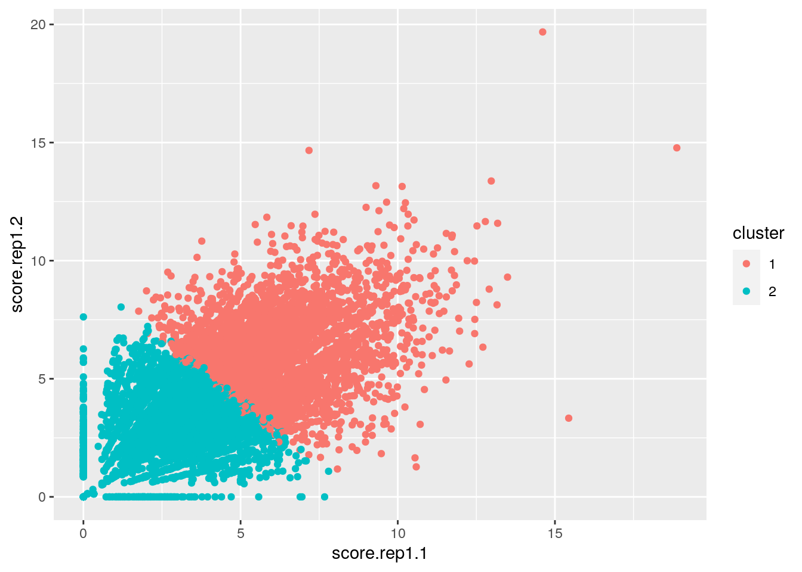
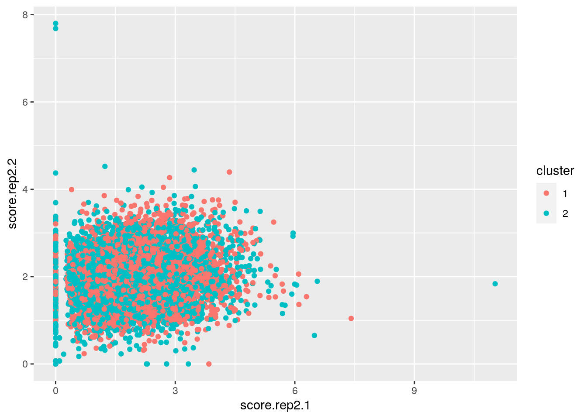
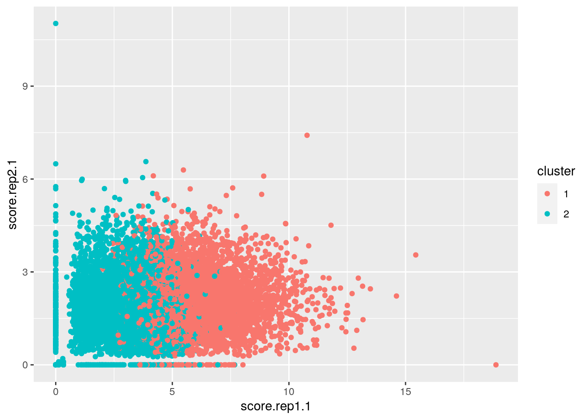

January 1, 0001
Data Wrangling and Data Exploration
0. Introduction
Ribosomes, the protein factories of the cell, are composed largely of RNA which is transcribed from ribosomal DNA (rDNA) repeat arrays. The nucleolus, the largest nuclear body, forms around these rDNA repeats. Aside from being the site of the initial steps of ribosome biogenesis, the nucleolus is hypothesized to function in organizing the genome in 3D space. One of these organizing structures of DNA is the genomic loci that contact the nucleolus, called nucleolus associated domains (NADs). These have been identified in several model organisms but have not been interrogated in the nematode Caenorhabditis elegans. My thesis project is focused around elucidating the role of the nucleolus in genome organization using C. elegans as a model organism, so the existence and identity of NADs is an important part of my research. NADs are classically identified by sequencing DNA that are associated with biochemically purified nucleoli, but they can also be approximated by analyzing chromatin conformation capture (Hi-C) data for genomic loci that contact the rDNA locus.
For this project, I have four datasets of previously published C. elegans Hi-C data for which I have extracted the Knight-Ruiz (KR) normalized observed/expected contact scores between rDNA and all genomic loci at a binsize of 10kb. These data are in bedGraph format, a standard format that contains the following variables: chromosome, start coordinate, end coordinate, and score. There are two biological replicates, and because of the size of the raw sequence read files, each replicate is split into two files. I am interested in attempting to identify C. elegans NADs using this Hi-C data. If NADs exist in this animal, they should be present in both replicates and in the two datasets of each replicate. Thus, I am interested in interrogating the correlations between these datasets and attempting to identify regions of high contacts with the rDNA.
library(tidyverse)
library(kableExtra)
library(RColorBrewer)
library(cluster)column_names <- c("chr", "start", "end", "score")
rep1.1 <- read_tsv("~/personal/projects/project1/data/aligned_SRR9286043_GSM3884598/inter_30_chrI-15060000-15060000_all_oe_KR_10000.bedGraph",
col_names = column_names)
rep1.2 <- read_tsv("~/personal/projects/project1/data/aligned_SRR9286044_GSM3884598/inter_30_chrI-15060000-15060000_all_oe_KR_10000.bedGraph",
col_names = column_names)
rep2.1 <- read_tsv("~/personal/projects/project1/data/aligned_SRR9286045_GSM3884599/inter_30_chrI-15060000-15060000_all_oe_KR_10000.bedGraph",
col_names = column_names)
rep2.2 <- read_tsv("~/personal/projects/project1/data/aligned_SRR9286046_GSM3884599/inter_30_chrI-15060000-15060000_all_oe_KR_10000.bedGraph",
col_names = column_names)1. Joining/Merging/Tidying
I joined all of the datasets using a full join because I did not want to drop any datapoints. The datasets were joined by merging regions at identical genomic loci, i.e. same chromosome, start, and end coordinates. I replaced NA with 0 to not lose any potentially meaningful loci from other datasets. I think this is exceptable because an NA after a join is reasonably a contact score of 0.
joint_wide <- rep1.1 %>% full_join(rep1.2, suffix = c(".rep1.1",
".rep1.2"), by = column_names[1:3]) %>% full_join(rep2.1,
by = column_names[1:3]) %>% full_join(rep2.2, suffix = c(".rep2.1",
".rep2.2"), by = column_names[1:3]) %>% arrange(chr, start) %>%
mutate_all(funs(replace_na(., 0)))The joined dataset was tidied using pivot_longer. This was done so that all contact scores would be in a single variable and to add a variable for replicate and the dataset. The replicate and dataset were separated to facilitate summary statistics for the replicates without being split by dataset, but the dataset information is still potentially useful for later steps. The datasets were also modified to differentiate between datasets belonging to replicate 1 and datasets belonging to replicate 2: the simple 1 vs 2 encoding of these could lead to confusion.
joint_long <- joint_wide %>% pivot_longer(starts_with("score"),
names_to = "replicate.dataset", names_prefix = "score.",
values_to = "score") %>% mutate(replicate.dataset = case_when(replicate.dataset ==
"rep1.1" ~ "rep1.1", replicate.dataset == "rep1.2" ~ "rep1.2",
replicate.dataset == "rep2.1" ~ "rep2.3", replicate.dataset ==
"rep2.2" ~ "rep2.4")) %>% separate(replicate.dataset,
into = c("replicate", "dataset"), sep = "\\.") %>% mutate(dataset = factor(dataset,
levels = c(1, 2, 3, 4)))2. Wrangling
Summary statistics (mean, median, max, standard deviation, variance, and interquartile range) were computed for contact scores of both datasets of both replicates. This was first performed for all observations genome-wide. These statistics show that the genome-wide contact scores for replicate 1 tend to be higher on average than those for replicate 2. Replicate 1 is also more variable than replicate 2. Although both datasets for replicate 2 had similar mean and median values, replicate 2 dataset 1 was more variable than replicate 2 dataset 2. Next, summary statistics were calculated for contact scores grouped by chromosomes. The summary statistics do not seem to be biased toward any one chromosome, and the same patterns from the genome-wide statistics seem to hold largely true here..
joint_wide %>% summarize_at(vars(score.rep1.1:score.rep2.2),
list(mean = mean, median = median, max = max, sd = sd, var = var,
IQR = IQR)) %>% kbl() %>% kable_styling(fixed_thead = T,
font_size = 10, position = "left", full_width = F, bootstrap_options = c("striped",
"responsive", "condensed"))| score.rep1.1_mean | score.rep1.2_mean | score.rep2.1_mean | score.rep2.2_mean | score.rep1.1_median | score.rep1.2_median | score.rep2.1_median | score.rep2.2_median | score.rep1.1_max | score.rep1.2_max | score.rep2.1_max | score.rep2.2_max | score.rep1.1_sd | score.rep1.2_sd | score.rep2.1_sd | score.rep2.2_sd | score.rep1.1_var | score.rep1.2_var | score.rep2.1_var | score.rep2.2_var | score.rep1.1_IQR | score.rep1.2_IQR | score.rep2.1_IQR | score.rep2.2_IQR |
|---|---|---|---|---|---|---|---|---|---|---|---|---|---|---|---|---|---|---|---|---|---|---|---|
| 4.444305 | 4.45933 | 2.023325 | 1.999305 | 4.314985 | 4.332129 | 1.959579 | 1.981343 | 18.87713 | 19.68138 | 11.0243 | 7.798891 | 2.1664 | 2.041247 | 0.9435337 | 0.5568109 | 4.693289 | 4.166689 | 0.8902559 | 0.3100383 | 2.871777 | 2.662162 | 1.230157 | 0.7132943 |
joint_wide %>% group_by(chr) %>% summarize_at(vars(score.rep1.1:score.rep2.2),
list(mean = mean, median = median, max = max, sd = sd, var = var,
IQR = IQR)) %>% kbl() %>% kable_styling(fixed_thead = T,
font_size = 10, position = "left", full_width = F, bootstrap_options = c("striped",
"responsive", "condensed"))| chr | score.rep1.1_mean | score.rep1.2_mean | score.rep2.1_mean | score.rep2.2_mean | score.rep1.1_median | score.rep1.2_median | score.rep2.1_median | score.rep2.2_median | score.rep1.1_max | score.rep1.2_max | score.rep2.1_max | score.rep2.2_max | score.rep1.1_sd | score.rep1.2_sd | score.rep2.1_sd | score.rep2.2_sd | score.rep1.1_var | score.rep1.2_var | score.rep2.1_var | score.rep2.2_var | score.rep1.1_IQR | score.rep1.2_IQR | score.rep2.1_IQR | score.rep2.2_IQR |
|---|---|---|---|---|---|---|---|---|---|---|---|---|---|---|---|---|---|---|---|---|---|---|---|---|
| chrI | 3.807246 | 3.843826 | 2.186616 | 2.140651 | 3.791251 | 3.806401 | 2.132712 | 2.133464 | 10.78604 | 10.67722 | 11.024295 | 4.524207 | 1.730178 | 1.685605 | 0.9393102 | 0.6141156 | 2.993516 | 2.841265 | 0.8823037 | 0.3771380 | 2.345737 | 2.251772 | 1.183865 | 0.7974184 |
| chrII | 4.556645 | 4.576828 | 1.998917 | 1.995239 | 4.439665 | 4.451974 | 1.924754 | 1.975831 | 12.45108 | 13.17269 | 5.924825 | 7.682052 | 2.155035 | 1.964236 | 0.8949145 | 0.5337473 | 4.644174 | 3.858222 | 0.8008721 | 0.2848862 | 2.967781 | 2.619886 | 1.170783 | 0.6550533 |
| chrIII | 4.071244 | 4.120320 | 1.947399 | 1.924953 | 3.922814 | 3.950192 | 1.880392 | 1.906918 | 14.61011 | 19.68138 | 6.095012 | 7.798891 | 2.048393 | 1.967173 | 0.9552962 | 0.5533686 | 4.195913 | 3.869769 | 0.9125908 | 0.3062168 | 2.581860 | 2.502223 | 1.195916 | 0.6999038 |
| chrIV | 4.571567 | 4.522894 | 1.975334 | 1.978967 | 4.469684 | 4.438525 | 1.911207 | 1.979717 | 13.17741 | 13.14126 | 6.491957 | 4.064417 | 2.239227 | 2.128935 | 1.0024016 | 0.5720500 | 5.014139 | 4.532365 | 1.0048090 | 0.3272412 | 3.077665 | 2.769570 | 1.265891 | 0.7309421 |
| chrV | 5.091355 | 5.081031 | 2.039496 | 2.021615 | 4.974190 | 4.993114 | 1.982232 | 2.008091 | 18.87713 | 14.77525 | 7.413114 | 4.267522 | 2.331140 | 2.156891 | 0.9270719 | 0.5416486 | 5.434214 | 4.652179 | 0.8594624 | 0.2933832 | 2.961355 | 2.713840 | 1.237240 | 0.7152796 |
| chrX | 4.305497 | 4.363247 | 1.991098 | 1.932874 | 4.199104 | 4.241719 | 1.930787 | 1.915968 | 13.15810 | 11.96396 | 5.956284 | 4.372796 | 2.103747 | 1.999511 | 0.9225764 | 0.5034385 | 4.425749 | 3.998045 | 0.8511473 | 0.2534503 | 2.854088 | 2.631474 | 1.223742 | 0.6670651 |
Summary statistics (mean, median, max, standard deviation, variance, and interquartile range) were computed for contact scores of both datasets of both replicates. I determined whether each locus was at the chromosome arm or center as these may have differential contacts with the rDNA. The mean value for each replicate was also calculated. Bins with an average contact score of 0 were removed, and summary statistics data grouped by chromosome and the localization within the arm or center were computed. There isn’t much of a difference between the arm and center contact scores for each chromosome.
joint_wide %>% group_by(chr) %>% mutate(class = ifelse(end >=
max(end)/3 & end >= max(end)/3, "center", "arm")) %>% select(!c(start,
end)) %>% rowwise() %>% mutate(score.rep1 = mean(c(score.rep1.1,
score.rep1.2))) %>% rowwise() %>% mutate(score.rep2 = mean(c(score.rep2.1,
score.rep2.2))) %>% filter(score.rep1 > 0 | score.rep2 >
0) %>% group_by(chr, class) %>% summarize_at(vars(score.rep1.1:score.rep2.2,
score.rep1, score.rep2), list(mean = mean, median = median,
max = max, sd = sd, var = var, IQR = IQR)) %>% arrange(chr,
class) %>% kbl() %>% kable_styling(fixed_thead = T, font_size = 10,
position = "left", full_width = F, bootstrap_options = c("striped",
"responsive", "condensed"))| chr | class | score.rep1.1_mean | score.rep1.2_mean | score.rep2.1_mean | score.rep2.2_mean | score.rep1_mean | score.rep2_mean | score.rep1.1_median | score.rep1.2_median | score.rep2.1_median | score.rep2.2_median | score.rep1_median | score.rep2_median | score.rep1.1_max | score.rep1.2_max | score.rep2.1_max | score.rep2.2_max | score.rep1_max | score.rep2_max | score.rep1.1_sd | score.rep1.2_sd | score.rep2.1_sd | score.rep2.2_sd | score.rep1_sd | score.rep2_sd | score.rep1.1_var | score.rep1.2_var | score.rep2.1_var | score.rep2.2_var | score.rep1_var | score.rep2_var | score.rep1.1_IQR | score.rep1.2_IQR | score.rep2.1_IQR | score.rep2.2_IQR | score.rep1_IQR | score.rep2_IQR |
|---|---|---|---|---|---|---|---|---|---|---|---|---|---|---|---|---|---|---|---|---|---|---|---|---|---|---|---|---|---|---|---|---|---|---|---|---|---|
| chrI | arm | 3.843096 | 3.912567 | 2.046715 | 1.986662 | 3.877832 | 2.016689 | 3.931218 | 3.782872 | 1.990476 | 1.960564 | 3.884206 | 2.003301 | 9.899558 | 9.974188 | 4.964153 | 3.786958 | 9.739932 | 3.781539 | 1.854899 | 1.797774 | 0.9696974 | 0.5685848 | 1.613672 | 0.5943807 | 3.440651 | 3.231993 | 0.9403130 | 0.3232887 | 2.603938 | 0.3532885 | 2.547377 | 2.290777 | 1.312414 | 0.7241780 | 2.154019 | 0.7995139 |
| chrI | center | 3.789603 | 3.809994 | 2.255470 | 2.216438 | 3.799798 | 2.235954 | 3.734408 | 3.816685 | 2.211586 | 2.215847 | 3.790496 | 2.216637 | 10.786038 | 10.677219 | 11.024295 | 4.524207 | 10.633843 | 6.430067 | 1.666034 | 1.627414 | 0.9166575 | 0.6217335 | 1.553801 | 0.6494782 | 2.775671 | 2.648476 | 0.8402610 | 0.3865526 | 2.414299 | 0.4218219 | 2.292104 | 2.242707 | 1.118449 | 0.7787534 | 2.090979 | 0.8138055 |
| chrII | arm | 4.870227 | 4.913304 | 1.957136 | 2.001600 | 4.891765 | 1.979368 | 4.800435 | 4.805594 | 1.922025 | 1.967986 | 4.821518 | 1.953851 | 12.451084 | 13.172694 | 5.058041 | 7.682052 | 11.238686 | 3.841026 | 2.365219 | 2.141500 | 0.9130782 | 0.5735206 | 2.046613 | 0.5427054 | 5.594264 | 4.586022 | 0.8337118 | 0.3289259 | 4.188625 | 0.2945292 | 3.227879 | 2.920816 | 1.126643 | 0.6096996 | 2.795815 | 0.7118429 |
| chrII | center | 4.400471 | 4.409252 | 2.019725 | 1.992072 | 4.404861 | 2.005898 | 4.320392 | 4.340475 | 1.936472 | 1.977904 | 4.384544 | 1.978199 | 11.532385 | 11.464162 | 5.924825 | 3.927414 | 9.576897 | 3.767396 | 2.025486 | 1.848068 | 0.8854472 | 0.5130541 | 1.691540 | 0.5346732 | 4.102595 | 3.415355 | 0.7840167 | 0.2632245 | 2.861308 | 0.2858755 | 2.843563 | 2.473610 | 1.186243 | 0.6700638 | 2.331609 | 0.6848812 |
| chrIII | arm | 4.050024 | 4.106226 | 1.895714 | 1.849698 | 4.078125 | 1.872706 | 3.904828 | 4.017465 | 1.798670 | 1.875466 | 3.978604 | 1.851085 | 10.369409 | 10.971122 | 6.095012 | 3.298643 | 9.520216 | 4.077162 | 2.219816 | 2.042417 | 0.9939509 | 0.5369132 | 1.914232 | 0.6038903 | 4.927585 | 4.171467 | 0.9879384 | 0.2882758 | 3.664284 | 0.3646835 | 2.954187 | 2.942814 | 1.133781 | 0.6434204 | 2.406939 | 0.7125093 |
| chrIII | center | 4.086331 | 4.131890 | 1.975429 | 1.964769 | 4.109111 | 1.970099 | 3.937482 | 3.932744 | 1.926985 | 1.935541 | 4.024518 | 1.943290 | 14.610110 | 19.681383 | 6.046278 | 7.798891 | 17.145747 | 3.959039 | 1.954548 | 1.925722 | 0.9330566 | 0.5544198 | 1.729980 | 0.5575613 | 3.820259 | 3.708404 | 0.8705945 | 0.3073814 | 2.992830 | 0.3108746 | 2.400475 | 2.374761 | 1.228305 | 0.7115937 | 2.132365 | 0.7175691 |
| chrIV | arm | 4.555275 | 4.452992 | 1.882396 | 1.890967 | 4.504134 | 1.886681 | 4.593153 | 4.246830 | 1.862930 | 1.922190 | 4.464999 | 1.853592 | 13.177409 | 11.581824 | 5.755199 | 3.615222 | 12.379616 | 3.740202 | 2.325785 | 2.175698 | 0.9558563 | 0.5861836 | 2.009544 | 0.5843154 | 5.409278 | 4.733660 | 0.9136613 | 0.3436112 | 4.038266 | 0.3414245 | 3.274683 | 3.023223 | 1.302876 | 0.7958036 | 2.857441 | 0.7624962 |
| chrIV | center | 4.579706 | 4.557815 | 2.021764 | 2.022928 | 4.568761 | 2.022346 | 4.411362 | 4.505222 | 1.944574 | 1.996153 | 4.445865 | 2.001898 | 12.786151 | 13.141258 | 6.491957 | 4.064417 | 12.220949 | 4.312361 | 2.195687 | 2.105265 | 1.0221034 | 0.5599524 | 1.933453 | 0.6002870 | 4.821042 | 4.432141 | 1.0446954 | 0.3135467 | 3.738241 | 0.3603444 | 2.970043 | 2.654568 | 1.266250 | 0.6924404 | 2.480495 | 0.7373730 |
| chrV | arm | 5.191761 | 5.184205 | 2.051527 | 1.987846 | 5.187983 | 2.019686 | 5.032404 | 5.087150 | 1.934011 | 1.967138 | 5.109361 | 1.982528 | 13.492183 | 11.507918 | 5.035170 | 3.481420 | 11.397293 | 3.927971 | 2.287602 | 2.138466 | 0.8761666 | 0.5236909 | 1.942810 | 0.5373145 | 5.233125 | 4.573035 | 0.7676680 | 0.2742521 | 3.774511 | 0.2887069 | 3.048026 | 2.715601 | 1.183401 | 0.6841582 | 2.509539 | 0.7252960 |
| chrV | center | 5.042526 | 5.030857 | 2.033645 | 2.038037 | 5.036691 | 2.035841 | 4.948876 | 4.954190 | 1.992806 | 2.029107 | 4.928897 | 2.019057 | 18.877129 | 14.775247 | 7.413114 | 4.267522 | 16.826188 | 4.359294 | 2.351288 | 2.164785 | 0.9510962 | 0.5496057 | 2.005313 | 0.5627028 | 5.528557 | 4.686293 | 0.9045840 | 0.3020665 | 4.021279 | 0.3166345 | 2.945633 | 2.657416 | 1.266866 | 0.7260076 | 2.563525 | 0.7266567 |
| chrX | arm | 4.350278 | 4.497420 | 1.987392 | 1.937906 | 4.423849 | 1.962649 | 4.149796 | 4.428384 | 1.896610 | 1.914586 | 4.367801 | 1.946996 | 13.158103 | 11.071704 | 5.953438 | 4.372796 | 11.094221 | 4.439559 | 2.192431 | 2.108680 | 0.9516055 | 0.5071152 | 1.916573 | 0.5489795 | 4.806752 | 4.446532 | 0.9055530 | 0.2571658 | 3.673252 | 0.3013785 | 2.944121 | 2.742026 | 1.221841 | 0.6590212 | 2.603868 | 0.6912009 |
| chrX | center | 4.286939 | 4.300419 | 1.994620 | 1.932014 | 4.293679 | 1.963317 | 4.215019 | 4.173799 | 1.946141 | 1.919459 | 4.192171 | 1.936142 | 12.446734 | 11.963962 | 5.956284 | 4.050921 | 11.147473 | 4.476642 | 2.056084 | 1.937436 | 0.9067872 | 0.4988611 | 1.759999 | 0.5414329 | 4.227481 | 3.753657 | 0.8222630 | 0.2488624 | 3.097595 | 0.2931495 | 2.780918 | 2.560351 | 1.220483 | 0.6652606 | 2.388910 | 0.7217678 |
3. Visualizing
joint_wide %>% select(starts_with("score")) %>% cor(use = "pair") %>%
as.data.frame() %>% rownames_to_column("var1") %>% pivot_longer(-1,
names_to = "var2", values_to = "correlation") %>% ggplot(aes(x = var1,
y = var2, fill = correlation)) + geom_tile() + scale_fill_gradient2(low = "red",
mid = "white", high = "blue") + geom_text(aes(label = round(correlation,
2)), color = "black", size = 4) + theme(axis.text.x = element_text(angle = 90,
hjust = 1)) + theme_bw() + coord_fixed() + labs(title = "Correlation of Contact Scores",
x = "", y = "")
Correlations between datasets were plotted. Correlations between all datasets are positive. However, the correlations are very low, perhaps much more so than would be expected between replicates. Interestingly, the correlation between datasets within the same replicates are much lower than expected, especially for replicate 2.
joint_long %>% ggplot(aes(x = dataset, y = score, color = replicate)) +
geom_violin() + stat_summary(fun.data = "mean_sdl", mult = 1,
geom = "pointrange") + theme_bw() + labs(title = "Distribution of Contact Scores",
subtitle = "rDNA vs. All", x = "Replicate and dataset", y = "rDNA contact score") +
scale_color_brewer(palette = "Paired") + scale_y_continuous(breaks = seq(0,
20, 2.5))
Violin plots were generated for each replicate and each dataset. Summary statistics of mean +/- one standard deviation are also plotted. All datasets are positively skewed. As expected from the summary statistics, the datasets are similar within replicates, but replicate 1 has a consistently higher contact score than replicate 2. Dataset 3 looks like it is potentially bimodal.
joint_wide %>% rowwise() %>% mutate(rep1_avg = mean(c(score.rep1.1,
score.rep1.2))) %>% rowwise() %>% mutate(rep2_avg = mean(c(score.rep2.1,
score.rep2.2))) %>% ggplot(aes(x = rep1_avg, y = rep2_avg)) +
geom_point(aes(color = chr), alpha = 0.1) + geom_smooth(method = lm,
se = FALSE) + lims(x = c(0, 20), y = c(0, 20)) + coord_fixed() +
theme_bw() + labs(title = "rDNA Contacts", subtitle = "rDNA vs. All",
x = "Contact score - Replicate 1", y = "Contact score - Replicate 2") +
scale_color_brewer(palette = "Set3")
Average contact scores for each bin were compared across replicates and colored by chromosome. As expected from the summary statistics, correlation plot, and the violin plot, there is a bias toward replicate 1. The positive correlation between the average contact scores of these replicates is weak.
4. Dimensionality Reduction - PAM Clustering
joint_clust <- joint_wide %>% select(starts_with("score")) %>%
scale %>% glimpse()## num [1:9990, 1:4] 0.373 0.308 -0.766 0.827 0.799 ...
## - attr(*, "dimnames")=List of 2
## ..$ : NULL
## ..$ : chr [1:4] "score.rep1.1" "score.rep1.2" "score.rep2.1" "score.rep2.2"
## - attr(*, "scaled:center")= Named num [1:4] 4.44 4.46 2.02 2
## ..- attr(*, "names")= chr [1:4] "score.rep1.1" "score.rep1.2" "score.rep2.1" "score.rep2.2"
## - attr(*, "scaled:scale")= Named num [1:4] 2.166 2.041 0.944 0.557
## ..- attr(*, "names")= chr [1:4] "score.rep1.1" "score.rep1.2" "score.rep2.1" "score.rep2.2"# sil_width<-vector() for(i in 2:5){ pam_fit <-
# pam(joint_clust, k = i) sil_width[i] <-
# pam_fit$silinfo$avg.width } ggplot() +
# geom_line(aes(x=1:5,y=sil_width)) +
# scale_x_continuous(name='k',breaks=1:5)Silhouette width vs. k took a very long time to run. In the interest of time, I am commenting out the code and adding an image of the plot here so that the document does not take forever to knit.

Silhouette width vs. k
pam1 <- joint_clust %>% pam(2)pamclust <- joint_wide %>% mutate(cluster = as.factor(pam1$clustering))
pamclust %>% ggplot(aes(x = score.rep1.1, y = score.rep1.2, color = cluster)) +
geom_point()
pamclust %>% ggplot(aes(x = score.rep2.1, y = score.rep2.2, color = cluster)) +
geom_point()
pamclust %>% ggplot(aes(x = score.rep1.1, y = score.rep2.1, color = cluster)) +
geom_point()
I performed PAM clustering for dimensionality reduction. I chose two clusters since there is a pretty steep dropoff of silhouette width from 2 to fewer clusters. Only 2 to 5 clusters were tested for silhouette since the datasets are so large - any more took a prohibitively long time to run. The average silhouette width was low, around 0.23. This is very low and indicates that there is not a substantial underlying structure that has been found by the clustering analysis. Visualizing the clusters seems like I have only managed to differentiate the data based on whether they have a high or low contact score in replicate 1. The goodness-of-fit is poor enough that not much more can be taken from this clustering analysis.
## paste this chunk into the ```{r setup} chunk at the top of
## your project 1 .Rmd file
knitr::opts_chunk$set(echo = TRUE, eval = TRUE, fig.align = "center",
warning = F, message = F, tidy = TRUE, tidy.opts = list(width.cutoff = 60),
R.options = list(max.print = 100))